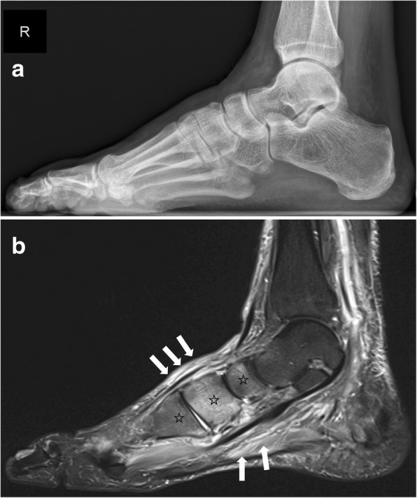
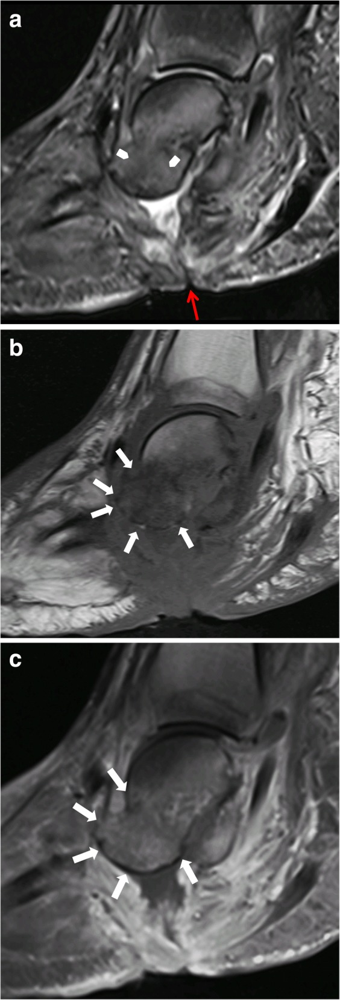
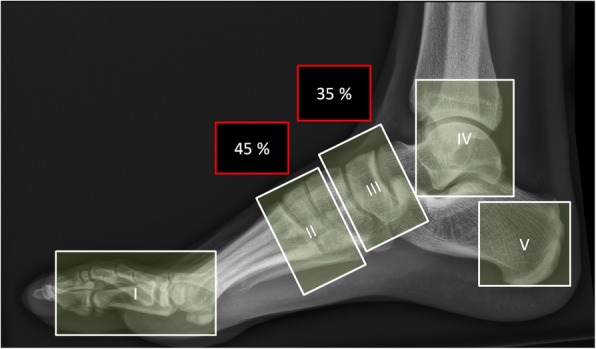

3845 — Bàn chân Charcot cấp / Acute Charcot neuro-osteoarthropathy (CNO)
Tags: pattern:phu-tuy-xuong pattern:phu-mo-mem pattern:gay-xuong pattern:bien-dang-ban-chan pattern:hoai-tu-xuong vung:ban-chan vung:co-xuong vung:khop score:Eichenholtz score:Sanders-Frykberg score:MSKI-RADS protocol:MRI-ban-chan protocol:Xquang-ban-chan protocol:CT-ban-chan incidentaloma:khong
Mức chắc chắn (certainty): tổng hợp y văn (literature synthesis) — dựa trên bài tổng quan có hình ảnh (pictorial review) 21 hình (Insights into Imaging 2019, PMC6682845, CC BY 4.0) và bài tổng quan cập nhật 2026 về bàn chân Charcot (J Clin Med 2026, PMC12986205, CC BY 4.0); số liệu theo dõi MRI lấy từ đoàn hệ 143 đợt Charcot (J Foot Ankle Res 2025, PMC12182253, CC BY 4.0). Nhóm không có bệnh nhân của mình; không ghi tên tác giả — attribution dùng tạp chí + năm + PMCID.
Câu chốt: Bàn chân Charcot cấp là bàn chân nóng, đỏ, sưng ở người đái tháo đường có biến chứng thần kinh ngoại biên, và đây là bệnh chẩn đoán bằng lâm sàng + MRI, không bằng X-quang. Ba con số phải thuộc: (1) X-quang được báo "bình thường" ở 79% số xương có phù tủy trên MRI (PMC12986205) — nên X-quang âm không loại trừ; (2) chẩn đoán muộn ≥ 8 tuần làm tăng 5 lần nguy cơ kết cục xấu, và trung vị trễ chẩn đoán thực tế ~87 ngày (PMC12986205); (3) MRI là chọn lựa đầu tay khi X-quang bình thường, với STIR 3 mm toàn bàn chân + T1 3 mm — phù tủy xương, phù mô mềm, gãy dưới sụn là dấu hiệu của thể hoạt động, còn nang dưới sụn, phá khớp, tăng sinh xương là dấu hiệu thể mạn (PMC6682845). Điều trị gốc là giảm tải (off-loading) ngay, không phải kháng sinh.
1. Tổng quan bệnh học – cơ chế hình ảnh
1.1 Cơ chế: vì sao một bàn chân "mất cảm giác" lại tự phá hủy
- Hai học thuyết bổ sung nhau: (a) thần kinh – mạch máu (neurovascular): mất trương lực giao cảm → giãn mạch, tăng lưu lượng → xương bị tiêu xương do sung huyết; (b) thần kinh – chấn thương (neurotraumatic): mất cảm giác đau → vi chấn thương lặp lại khi đi lại mà bệnh nhân không biết. Hai cơ chế cộng lại thành viêm vô khuẩn mạn tính của xương và khớp: cytokines (IL-6, TNF-α, RANKL) hoạt hóa hủy cốt bào mạnh hơn tạo cốt bào.
- Vì sao đỏ – nóng – sưng: chính là viêm (tăng tưới máu + phù). Vì vậy bàn chân Charcot cấp bắt chước viêm mô tế bào và huyết khối tĩnh mạch sâu — và điều trị thì ngược hẳn: Charcot cần giảm tải và bất động, không rạch, không kê kháng sinh dài.
- Vì sao tổn thương ưu thế ở khớp Lisfranc: đó là điểm chịu lực chuyển tiếp giữa bàn chân trước và giữa, biên độ vận động nhỏ nhưng tải lớn — nơi ứng suất tập trung khi mất cảm giác bảo vệ.
1.2 TẠI SAO hình ảnh trông như vậy (vật lý chuỗi xung)
- Phù tủy xương (bone marrow oedema, BME): phù = nước tự do thay mỡ trong tủy → trên T1W tủy mất tín hiệu sáng của mỡ (tối hơn cơ/đĩa đệm), trên STIR/T2W fat-sat tăng tín hiệu mạnh. Đây là lý do bắt buộc phải có T1W: chỉ STIR thì không phân biệt được phù (nước) với thay thế tủy thật (mủ, tế bào u, xơ).
- Vì sao STIR rất nhạy nhưng không đặc hiệu: nước ở đâu cũng sáng — phù do Charcot, do viêm tủy xương, do gãy stress, do phẫu thuật, do chuyển hóa đều tăng tín hiệu. Độ nhạy cao, độ đặc hiệu thấp — nên "STIR sáng" không phải chẩn đoán.
- Thể hoạt động (active) vs thể mạn (chronic): hoạt động = phù tủy + phù mô mềm + gãy dưới sụn + tràn dịch khớp; mạn = nang dưới sụn, phá hủy khớp, tăng sinh xương, mảnh xương rời, trật khớp (PMC6682845). Trên T1, mô xơ–xương đặc tối ở mọi chuỗi xung, còn mỡ tủy hồi phục thì sáng lại trên T1 — đây là cách đọc "bệnh còn hoạt động hay đã nguội".
- Vì sao X-quang chậm: hủy xương phải mất ~30–50% khoáng chất mới thấy trên phim, nên trong thể 0 (Eichenholtz 0) phim bình thường dù tủy đã phù; nghiên cứu đồng thuận cho thấy X-quang báo bình thường 79% số xương có BME trên MRI (PMC12986205).
- Vì sao siêu âm/CT ít vai trò ở thể sớm: CT không thấy phù tủy; giá trị của CT nằm ở thể muộn: đánh giá tăng sinh xương, can xương, di lệch, quy hoạch mổ và theo dõi khung cố định ngoài (PMC6682845).
1.3 Ngưỡng định lượng nằm lòng
| Chỉ số | Số / ngưỡng | Nguồn |
|---|---|---|
| X-quang "bình thường" dù có phù tủy | 79% số xương có BME | PMC12986205 |
| Trễ chẩn đoán | trung vị ~87 ngày; bị bỏ sót tới 95% ca; ≥ 8 tuần → nguy cơ kết cục xấu ×5 | PMC12986205 |
| Vị trí theo Sanders–Frykberg | zone II ~45%, zone III ~35% | PMC6682845 |
| Tái hoạt động sau khi đã "nguội" | ~23%, trung bình 27 tháng | PMC6682845 |
| Thời gian giảm tải | có thể tới 18 tháng | PMC6682845 |
| Biến chứng muộn | tới 80% bàn chân Charcot loét; nguy cơ cắt cụt cao | PMC12986205 |
| Chênh nhiệt độ bàn chân | ≥ 2 °C so với bên đối diện thường được coi là "đang hoạt động" — nhưng IWGDF nghi ngờ độ chính xác của ngưỡng này | PMC12986205 |
| CRP trong Charcot cấp | bình thường ở ~50% ca; CRP 79 mg/L và ESR 60 mm/h là ngưỡng tốt nhất để gợi ý viêm tủy xương | PMC12986205 |
| MRI cho viêm tủy xương ở bàn chân | độ nhạy 77–100%, độ đặc hiệu 80–100%, NPV 98% | PMC6682845 |
2. Mẫu hình + chẩn đoán phân biệt theo vị trí (gamut)
- Mẫu hình: bàn chân nóng–đỏ–sưng một bên ở người đái tháo đường lâu năm, không sốt cao, không có cửa vào nhiễm trùng, X-quang có thể bình thường → MRI: phù tủy xương + phù mô mềm quanh khớp giữa bàn chân.
- Gamut theo vị trí (Sanders–Frykberg, dùng được trên phim không cần thông tin lâm sàng):
- Zone I – khớp bàn–ngón và gian đốt (ít gặp).
- Zone II – khớp bàn–cổ chân (Lisfranc) — ~45%, hay gây biến dạng "rocker-bottom".
- Zone III – khớp cổ chân giữa (Chopart: sên–thuyền, gót–hộp) — ~35%.
- Zone IV – cổ chân và dưới sên (nguy cơ sụp đổ, mất vững nặng).
- Zone V – xương gót (thường sau chấn thương/gãy).
- Gamut theo bối cảnh (quan trọng nhất ở phòng cấp cứu): bàn chân đỏ nóng một bên ở người đái tháo đường = Charcot cấp, viêm mô tế bào/áp-xe, huyết khối tĩnh mạch sâu, gút/canxi hóa cấp, viêm tủy xương, gãy stress/thiếu xương, huyết khối – thiếu máu chi.
- Mnemonic "HOT FOOT" (6 thứ phải loại trừ trước khi yên tâm với Charcot): Huyết khối tĩnh mạch sâu, Osteomyelitis (viêm tủy xương), Tổn thương mô mềm (viêm mô tế bào/áp-xe), Fracture (gãy stress), Out of gout (gút), Thiếu máu – tắc mạch.
3. Bảng so sánh phân biệt (ma trận đối chiếu)
| Thực thể (entity) | Hình ảnh điển hình | Chốt vào (rule-in) | Chốt loại (rule-out) | Gợi ý xác nhận |
|---|---|---|---|---|
| Charcot cấp (thể hoạt động) | Phù tủy xương lan quanh khớp (Lisfranc/Chopart), phù mô mềm, gãy dưới sụn, tràn dịch khớp; X-quang có thể bình thường | Bàn chân nóng đỏ sưng + mất cảm giác bảo vệ + X-quang bình thường mà STIR phù tủy, không có loét/cửa vào | Loét thủng tới xương, đường rò (sinus tract), áp-xe mô mềm, mất tín hiệu tủy trên T1 khu trú → nghĩ viêm tủy xương | MRI (STIR + T1), X-quang 2 bên, nhiệt độ, CRP/ESR |
| Viêm tủy xương (OM) | Mất tín hiệu tủy trên T1 khu trú, phù tủy liên tục với ổ loét, đường rò tới xương, áp-xe, phản ứng màng xương | Loét sâu chạm xương + sinus tract + áp-xe + CRP 79 mg/L / ESR 60 mm/h | Phù tủy đối xứng quanh khớp, không ổ loét → nghiêng Charcot | MRI ± đối chiếu 99mTc-HMPAO-WBC SPECT/CT (đặc hiệu cao hơn), cấy xương |
| Viêm mô tế bào / áp-xe mô mềm | Phù và thâm nhiễm mô dưới da, không phù tủy, có thể ổ dịch | Đỏ lan theo mô mềm, đau, sốt, phù tủy âm | Phù tủy rõ mà mô mềm chỉ phù nhẹ → không phải nhiễm mô mềm đơn thuần | Siêu âm mô mềm, MRI; màu đỏ do phụ thuộc biến mất sau 5–10 phút kê cao gợi ý Charcot |
| Huyết khối tĩnh mạch sâu (DVT) | Tĩnh mạch sâu không xẹp, có huyết khối, phù mô mềm lan toàn chi, không phù tủy | Siêu âm Doppler dương + D-dimer cao, phù cả cẳng chân | Phù khu trú quanh khớp bàn chân + phù tủy → Charcot | Siêu âm Doppler (là xét nghiệm đầu tay khi phù một chi) |
| Gút / bệnh tinh thể | Nang/hạt mềm quanh khớp, viêm mô mềm, không phù tủy lan rộng, có thể gãy bờ xương | Tinh thể urat trong dịch khớp, hạt tăng tín hiệu T1 (urate) | Phù tủy rộng, nhiều xương → không phải gút | Chọc dịch khớp, siêu âm (dấu "double contour") |
| Gãy stress / thiếu xương | Đường gãy mảnh trên T1, phù tủy quanh một xương, phản ứng màng xương | Đau tăng khi tải, phù tủy giới hạn một xương, không phá khớp | Phù tủy nhiều xương quanh một khớp + biến dạng khớp → Charcot | MRI (T1 thấy đường gãy), CT nếu cần |
- Ảnh ghép đối chiếu: 3 ảnh dưới đây giữ nguyên từng hình, không ghép — mỗi hình là một luận điểm khác nhau (X-quang âm vs STIR dương; biến chứng viêm tủy; bản đồ vùng).
Ba dấu hiệu đọc đúng — đừng đọc lẫn
- X-quang âm ≠ không bệnh: ở thể 0, phim bình thường nhưng STIR đã phù tủy — đây là cửa sổ vàng để giảm tải sớm, và bỏ qua nó là lý do của trễ chẩn đoán 87 ngày.
- Phù tủy "quanh khớp" (peri-articular) = Charcot; "khu trú + dính ổ loét" = viêm tủy xương: hai bệnh cùng phù tủy, khác nhau ở bản đồ phân bố và cửa vào nhiễm trùng.
- Xương hộp (cuboid) tụt xuống thấp nhất trong biến dạng rocker-bottom → loét đúng dưới xương hộp → đường rò vào xương hộp → viêm tủy xương (PMC6682845).
4. Protocol chụp + hệ phân độ/điểm chuẩn hóa
4.1 Protocol
- X-quang bàn chân 2 bên, tư thế chịu lực (weight-bearing): AP + nghiêng; so sánh bên đối diện; không loại trừ khi bình thường.
- MRI là chọn lựa đầu tay khi X-quang bình thường mà vẫn nghi Charcot (khuyến cáo của Charcot Guidance Group/IWGDF, PMC12986205):
- FOV lớn, toàn bàn chân–cổ chân (bệnh có thể lan nhiều vùng);
- STIR (hoặc T2 fat-sat) sagittal 3 mm toàn bàn chân — nhìn phù tủy + mô mềm;
- T1 TSE sagittal 3 mm — bắt buộc để phân biệt phù với thay thế tủy thật;
- T1 transverse 3 mm vùng cổ chân/Lisfranc; T2 coronal 3 mm nhìn nang dưới sụn, dịch, đường rò;
- Cản quang chỉ khi nghi nhiễm trùng (áp-xe, viêm tủy xương) — không dùng thường quy (bệnh nhân đái tháo đường có nguy cơ suy thận).
- CT: thể muộn, đánh giá tăng sinh/can xương, di lệch, quy hoạch mổ, theo dõi khung cố định ngoài; hoặc khi chống chỉ định MRI.
- Y học hạt nhân: khi MRI chống chỉ định/không kết luận — 99mTc-HMPAO-WBC SPECT/CT có độ đặc hiệu cao hơn MRI trong phân biệt Charcot – viêm tủy xương (cùng độ nhạy); FDG-PET/CT có thể theo dõi mức viêm và hỗ trợ quyết định thời gian điều trị.
- Báo cáo theo cấu trúc MSKI-RADS (2025) khi có nhiễm trùng xương–khớp: phân độ giúp thống nhất ngôn ngữ với phẫu thuật.
4.2 Phân độ
| Hệ | Dùng để | Nội dung cốt lõi |
|---|---|---|
| Eichenholtz (0–IV, bản sửa đổi) | Giai đoạn tự nhiên, chọn cách điều trị | 0: đỏ–nóng–sưng, X-quang bình thường, MRI đã phù tủy; I phát triển (mảnh xương, di lệch); II kết dính (can xương, xơ); III tái tạo (biến dạng cố định); (IV: biến dạng nặng/loét) |
| Sanders–Frykberg (I–V) | Định khu tổn thương, tiên lượng biến dạng | I bàn–ngón, II Lisfranc, III Chopart, IV cổ chân/dưới sên, V xương gót |
| Brodsky/Trepman | Mô tả rộng theo vùng giải phẫu | Dùng khi cần so sánh nghiên cứu |
flowchart TD
A["Bàn chân đỏ nóng sưng ở người đái tháo đường"] --> B["X-quang 2 bên, tư thế chịu lực"]
B -->|"Bất thường: gãy, di lệch, mảnh xương"| C["Charcot thể hoạt động muộn: giảm tải NGAY"]
B -->|"Bình thường mà vẫn nghi"| D["MRI: STIR + T1 3 mm toàn bàn chân"]
D -->|"Phù tủy quanh khớp, không ổ loét"| E["Charcot thể 0: bó bột tiếp xúc toàn bộ, không rạch"]
D -->|"Ổ loét chạm xương, đường rò, áp-xe, T1 mất tín hiệu khu trú"| F["Nghi viêm tủy xương: cấy xương + kháng sinh theo mô"]
F --> G["Nếu MRI không kết luận: 99mTc-WBC SPECT/CT"]
E --> H["Theo dõi nhiệt độ + CRP/ESR + X-quang 4-6 tuần"]
H --> I{"Nhiệt độ chênh dưới 2 °C và hết đỏ sưng"}
I -->|"Chưa"| E
I -->|"Rồi"| J["Chuyển giày/đế giảm tải, theo dõi tái hoạt động 23%"]
- Điều trị: bó bột tiếp xúc toàn bộ (TCC) không tháo, cao tới gối là lựa chọn ưu tiên; nếu không khả thi → walker boot cao gối cố định không tháo (IWGDF, PMC12986205). Bắt đầu giảm tải trước khi có kết quả chụp — lợi ích lớn hơn nguy cơ.
- Theo dõi bằng MRI lặp lại: đoàn hệ 143 đợt Charcot cho thấy nhóm chụp MRI theo dõi có thời gian bó bột và tổng thời gian điều trị dài hơn có ý nghĩa (p < 0,001) dù đặc điểm và kết cục tương đương — chưa có bằng chứng MRI lặp lại rút ngắn điều trị (PMC12182253). Đây là lý do phải dùng MRI theo dõi một cách có chỉ định, không thường quy.
5. Biến thể bình thường và cạm bẫy
- Cạm bẫy lớn nhất: X-quang bình thường. 79% xương có phù tủy vẫn được đọc là bình thường trên X-quang → không được kết luận "không có Charcot".
- Ngưỡng chênh nhiệt ≥ 2 °C không phải chân lý: IWGDF nêu rõ ngưỡng này tùy tiện, thiếu chuẩn hóa vị trí đo (4–8 mốc không được kiểm chứng) — dùng như xu hướng theo dõi, không phải tiêu chuẩn chẩn đoán duy nhất.
- CRP bình thường không loại trừ Charcot cấp: ~50% ca có CRP bình thường; ngược lại CRP 79 mg/L/ESR 60 mm/h mới là ngưỡng gợi ý viêm tủy xương.
- Đỏ do phụ thuộc (dependent rubor): đỏ của Charcot giảm sau 5–10 phút kê cao chân; đỏ của nhiễm trùng không giảm — nghiệm pháp lâm sàng miễn phí, hay bị bỏ qua.
- Phù tủy sau mổ/ghép xương/sau gãy có thể tồn tại nhiều tháng — đừng gọi là "Charcot tái hoạt" chỉ vì STIR còn sáng; cần T1 tương ứng và bối cảnh.
- "Satisfaction of search": thấy phù tủy ở Lisfranc rồi dừng, bỏ sót ổ loét ở gan bàn chân dưới xương hộp hoặc huyết khối tĩnh mạch sâu đồng thời.
- Đừng thăm dò/đặt que vào ổ loét tới xương để "kiểm tra" — làm tăng nguy cơ đưa vi khuẩn vào xương; nghi viêm tủy xương thì MRI + cấy xương khi cần.
- Biến thể bình thường dễ nhầm: mỡ tủy bàn chân ở người trẻ (tủy đỏ còn lại) có thể giảm tín hiệu T1 nhẹ đối xứng — đối chiếu bên đối diện và vị trí quanh khớp.
6. Tự lượng giá — Blind Quiz ngay trên trang tĩnh
Ca 1 — Nam 58 tuổi, đái tháo đường type 2 15 năm, bàn chân phải nóng đỏ sưng 3 tuần, không sốt, không loét. Xem 2 ảnh rồi trả lời.

- Gợi ý: mất cảm giác monofilament, mạch mu chân rõ, CRP 6 mg/L.
- Câu hỏi: (a) X-quang có bất thường không? (b) Chuỗi xung ở hình b là gì và dấu hiệu chính? 3 chẩn đoán phân biệt? Việc cần làm ngay?
Bấm để hiện đáp án (findings + chẩn đoán)
- X-quang (a): không thấy bất thường — không gãy, không di lệch, không hủy xương rõ.
- MRI (b, sagittal STIR): phù tủy xương lan rộng ở các xương cổ chân giữa (dấu sao), phù mô mềm và gân cơ (mũi tên), không có ổ loét/đường rò.
- Chẩn đoán: bàn chân Charcot cấp thể 0 (Eichenholtz 0) — bàn chân nóng đỏ + X-quang âm + STIR phù tủy quanh khớp.
- Phân biệt: viêm mô tế bào, huyết khối tĩnh mạch sâu, gút, viêm tủy xương (không có cửa vào ở ca này).
- Việc cần làm ngay: giảm tải bằng bó bột tiếp xúc toàn bộ — không rạch, không kháng sinh; hẹn chụp lại.
- Nguồn ảnh: Insights into Imaging 2019, PMC6682845, Fig. 14, CC BY 4.0 (nguyên bản).
Ca 2 — Bệnh nhân Charcot 5 năm, loét gan bàn chân 2 tháng không lành, chảy mủ:

- Câu hỏi: Dấu hiệu nào trên ảnh nói "nhiễm trùng" chứ không chỉ "Charcot"? Vì sao vị trí ổ loét lại quan trọng?
Bấm để hiện đáp án
- Dấu hiệu: ổ loét da + đường rò (sinus tract) chạy từ da tới xương (mũi tên), mất tín hiệu mỡ tủy trên T1 khu trú tại xương dưới ổ loét, ngấm thuốc viền sau tiêm.
- Vì sao vị trí quan trọng: ở biến dạng rocker-bottom, xương hộp trở thành xương thấp nhất → chịu lực và loét đúng trên nó → đường rò vào xương hộp.
- Chẩn đoán: Charcot + viêm tủy xương chồng lấp → cần cấy xương và kháng sinh theo mô bệnh, không chỉ kháng sinh kinh nghiệm.
- Phản biện: phù tủy đơn thuần quanh khớp không chứng minh nhiễm trùng — chốt là cửa vào + T1 khu trú + đường rò/áp-xe; nếu MRI không rõ, 99mTc-WBC SPECT/CT đặc hiệu hơn.
- Nguồn ảnh: Insights into Imaging 2019, PMC6682845, Fig. 21, CC BY 4.0 (nguyên bản).
Ca 3 — Bạn nhận bệnh nhân Charcot, cần mô tả tổn thương theo vùng để bàn với phẫu thuật:

- Câu hỏi: 5 vùng gồm những khớp/xương nào? Vùng nào hay gặp nhất và chiếm bao nhiêu %?
Bấm để hiện đáp án
- Zone I: khớp bàn–ngón và gian đốt; II: khớp bàn–cổ chân (Lisfranc); III: khớp cổ chân giữa (Chopart: sên–thuyền, gót–hộp); IV: cổ chân và dưới sên; V: xương gót.
- Hay gặp nhất: zone II ~45%, sau đó zone III ~35% (PMC6682845).
- Ý nghĩa: zone II/III → nguy cơ rocker-bottom; zone IV → sụp đổ cột trong, mất vững nặng, dễ phải mổ.
- Nguồn ảnh: Insights into Imaging 2019, PMC6682845, Fig. 6, CC BY 4.0 (nguyên bản).
Bài liên quan chéo
- 370 – Nhiễm trùng cơ xương khớp (viêm tủy xương, áp-xe mô mềm)
- 6179 – Viêm xương tủy cấp ở trẻ: MRI là chốt (phù tủy xương – nguyên lý chuỗi xung)
- 383 – Bệnh gân gót – gân chày – cân gan chân (đau bàn chân, chẩn đoán phân biệt mô mềm)
- 320 – Gãy xương – trật khớp cấp cứu (gãy stress, bỏ sót trên X-quang)
- 300 – Tổng quan Cơ – Xương – Khớp
Ảnh
- Tên file theo quy ước
3845_charcot_<Modality>_<PMCID>-f<so>.jpg; nguồn + giấy phép từng ảnh ởimages/CREDITS.md. - Cả 3 ảnh CC BY 4.0 từ Insights into Imaging 2019 (PMC6682845), tải từ PMC CDN, nguyên bản — giữ nhãn a/b/c và mũi tên của hình gốc.
Không dùng để chẩn đoán độc lập khi chưa có người hướng dẫn.